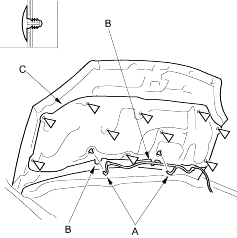

- Disconnect the windshield washer tubes (A).
Fastener Locations  : Clip, 10
: Clip, 10

- Using a clip remover, detach the clips. Release the hooks (B), then remove the hood insulator (C). Take care not to scratch the hood.
- Install the insulator in the reverse order of removal and replace any damaged clips.